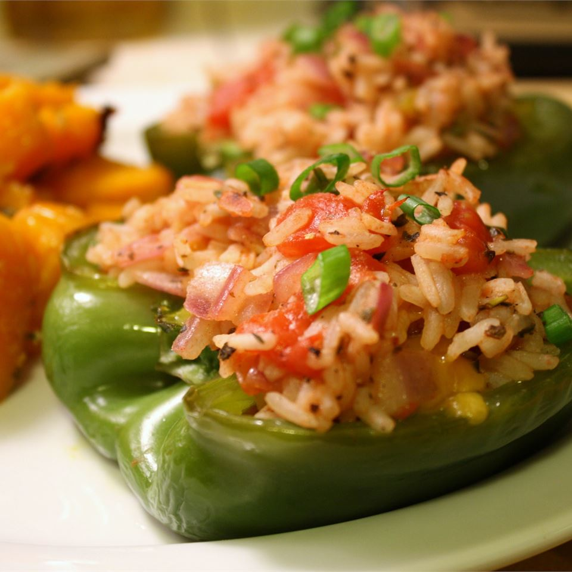

Stuffed Peppers My Way

Description
Cut Pepper in half and stuff it. Wicked
Ingredients
- 1 cup water
- ½ cup uncooked Arborio rice
- 2 green bell peppers, halved and seeded
- 1 tablespoon olive oil
- 2 green onions, thinly sliced
- 1 teaspoon dried basil
- 1 teaspoon Italian seasoning
- 1 teaspoon salt
- 1 pinch ground black pepper
- 1 tomato, diced
- ½ cup crumbled feta cheese
Steps
- Preheat oven to 400 degrees F (200 degrees C). Lightly grease a baking sheet.
- In a medium saucepan, bring water to a boil. Stir in the rice. Reduce heat, cover, and simmer for 20 minutes. Remove from heat, and set aside.
- Place the peppers cut-side down on the prepared baking sheet. Roast 25 to 30 minutes in the preheated oven, or until tender and skin starts to brown.
- While the peppers are roasting, heat oil in a medium skillet over medium-high heat.
Cook the onions, basil, Italian seasoning, salt, and pepper in oil for 2 to 3 minutes.
Stir in the tomato, and cook for 5 minutes. Spoon in the cooked rice, and stir until heated through.
Remove from heat, mix in the feta cheese, and spoon the mixture into the pepper halves.
- Return to the oven for 5 minutes. Serve immediately.
Go to top of page
Go back to Glossary